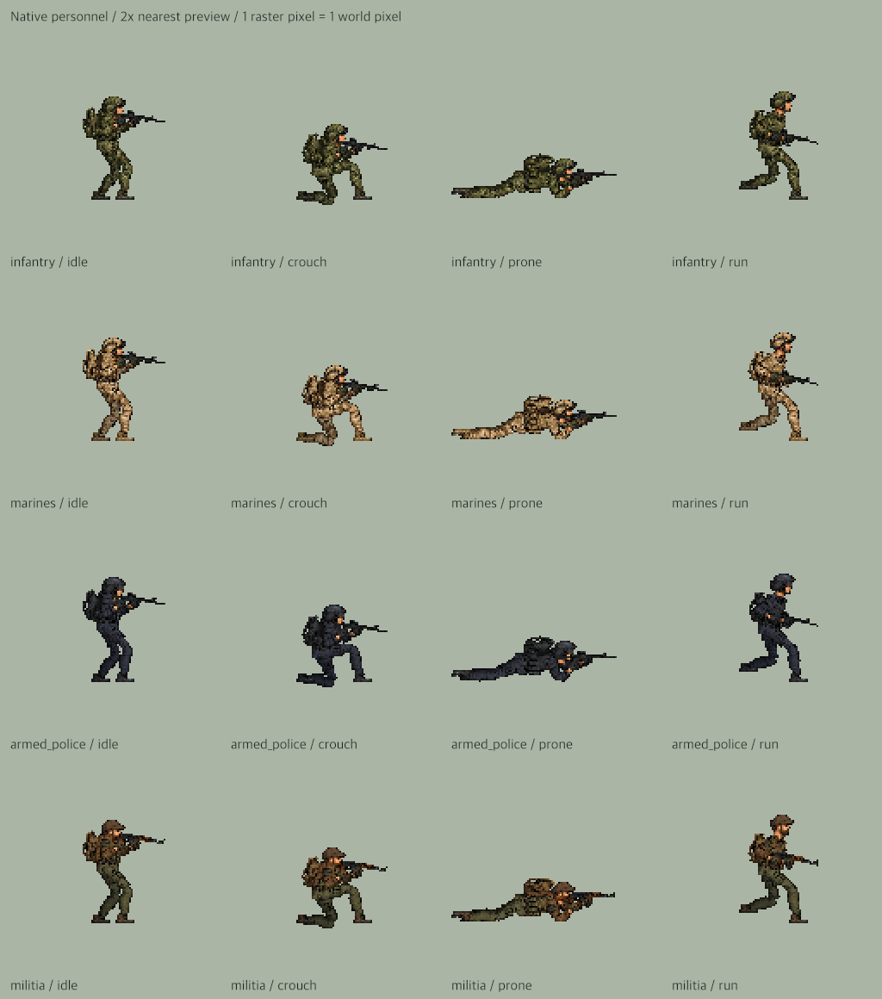
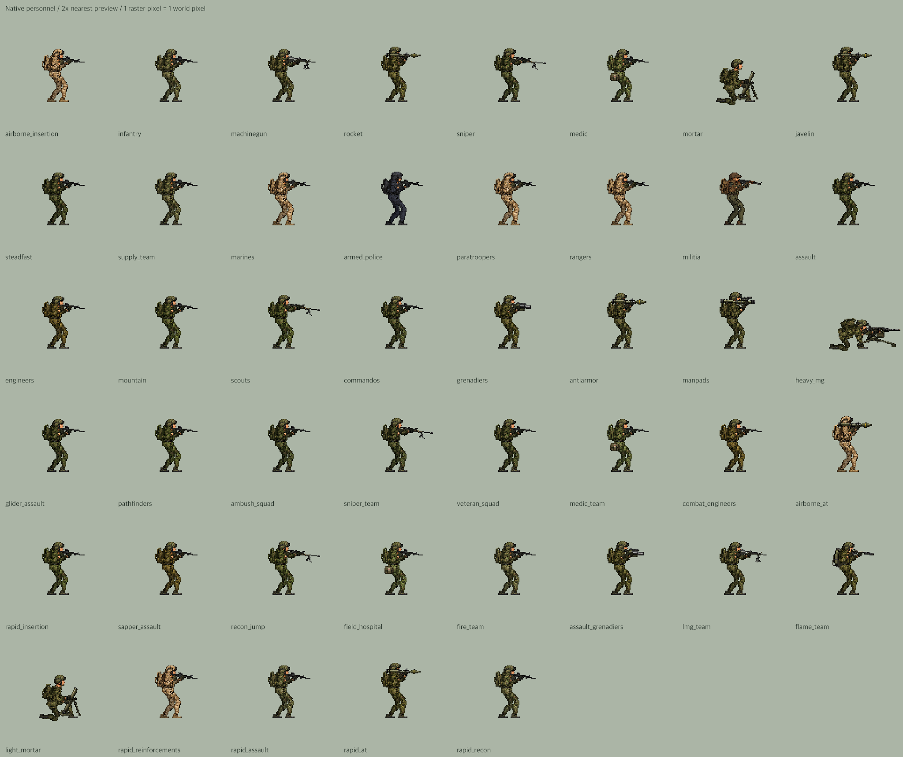
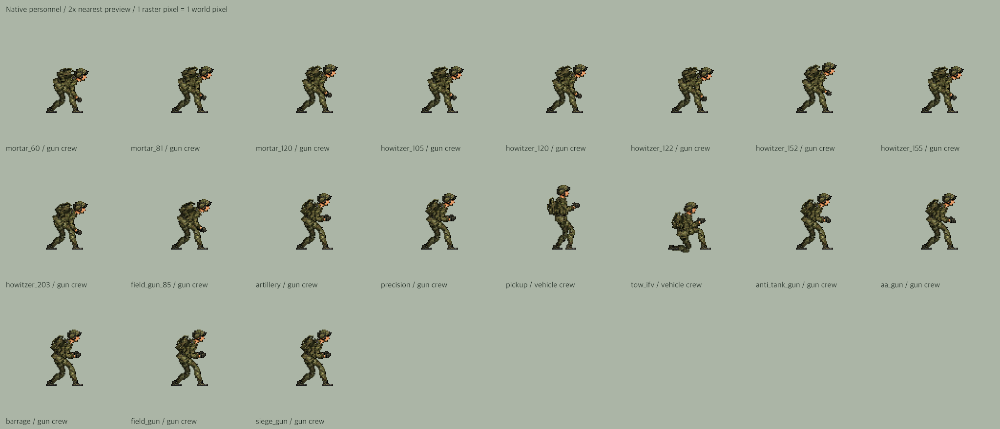

人物像素检查 · v234
45种步兵配置、70组乘员样本、1721个动作画面。步兵、炮兵操作员和车上乘员均使用128×128原生画布；一格精灵像素对应一格世界像素。不同姿势改变轮廓，不改变像素比例。此页的整数放大仅供检查。
隐身轰炸机与导弹反制检查四种人物身份与姿势

全部步兵配置

车上乘员与炮兵操作员

45种步兵配置、70组乘员样本、1721个动作画面。步兵、炮兵操作员和车上乘员均使用128×128原生画布；一格精灵像素对应一格世界像素。不同姿势改变轮廓，不改变像素比例。此页的整数放大仅供检查。
隐身轰炸机与导弹反制检查

